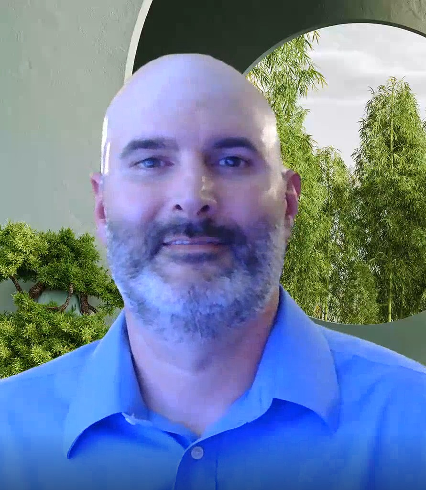

Introduction
Continuing my education in the Computer Information Systems program at Northwestern State University, I am working to combine more than 25 years of experience in electrical, electronics, and instrumentation with new skills. I am currently focusing my studies on networking and cybersecurity while continuing my full-time role as a Senior level E&I Technician at a power generation facility. My goal is to grow into roles that allow me to apply both my technical background and my growing knowledge of information systems to help improve operations, security, and reliability in industrial environments. Outside of work and school, I enjoy spending time with my children and staying active in learning new technologies. I created this website as part of my coursework to document my progress and share my professional background.
